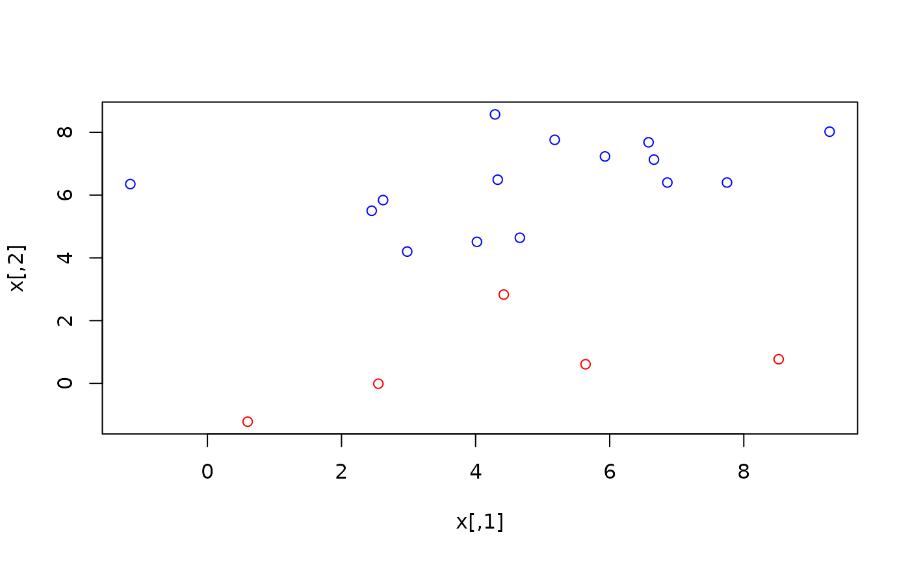
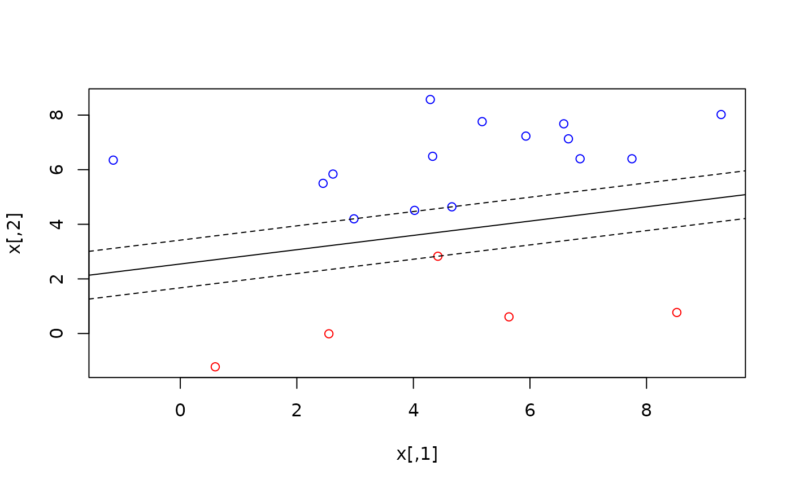
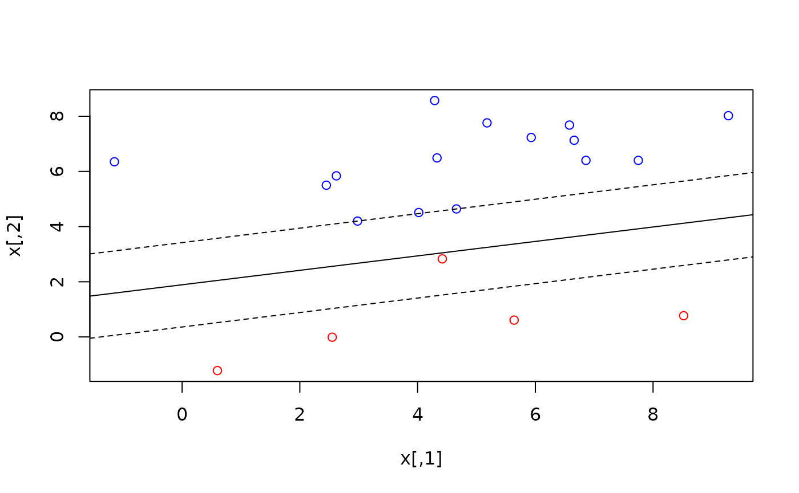

This vignette focuses on different regression techniques that can be solved using linear models.
\[ y_i = \sum_{j=1}^k{\beta_j x_{ij}} + e_i \] We start by generating the data we’ll use.
set.seed(123)
n <- 50
k <- 3
true_beta <- c(2, 3, -5)
x <- matrix(rpois(n*k, 6), nrow = n, ncol = k)
x[, 1] <- 1
head(x)
#> [,1] [,2] [,3]
#> [1,] 1 2 6
#> [2,] 1 5 5
#> [3,] 1 8 6
#> [4,] 1 3 10
#> [5,] 1 6 6
#> [6,] 1 4 9
e <- rnorm(n)
y <- (x %*% true_beta) + e
head(y)
#> [,1]
#> [1,] -20.974429
#> [2,] -8.284773
#> [3,] -5.220718
#> [4,] -38.818697
#> [5,] -10.138891
#> [6,] -30.994236Least Absolute Deviation
The objective of Least Absolute Deviation (LAD) regression is to minimize the absolute residuals.
\[ \min{\sum_{i=1}^n{|e_i|}} \]
The absolute value function \(|e|\) is not linear, so we have to separate each \(e_i\) into:
\[ e_i = e_i^+ - e_i^- \] \[ e_i^+ \ge 0,\ e_i^- \ge 0 \] Then the problem can be written like this:
\[ \begin{array}{rl} \min & \sum_{i=1}^n{e_i^+ + e_i^-} \\ \text{st } & e_i^+ \ge y_i - \hat{y_i} \\ & e_i^- \ge \hat{y_i} - y_i \\ & e_i^+ \ge 0 \\ & e_i^- \ge 0 \\ \text{where } & \hat{y_i} = \sum_{j=1}^k{\beta_j x_{ij}} \end{array} \]
This works. The objective function attempts to push both \(e_i^+\) and \(e_i^-\) down, but the constraints ensure that:
If \(e_i > 0\ \Rightarrow\ e_i^+ = e_i,\ e_i^- = 0\).
If \(e_i < 0\ \Rightarrow\ e_i^+ = 0,\ e_i^- = |e_i|\).
Let’s write the problem in lpsugar.
n <- nrow(x)
k <- ncol(x)
lad <- lp_problem() |>
lp_var(beta[1:k]) |>
lp_var(e_pos[1:n], lower = 0) |>
lp_var(e_neg[1:n], lower = 0) |>
lp_min(sum(e_pos + e_neg)) |>
lp_alias(yhat = x %*% beta) |>
lp_con(
pos = e_pos >= y - yhat,
neg = e_neg >= yhat - y
) |>
lp_solve()The estimated \(\hat{\beta}\) is
quite similar to the true_beta \(\beta\).
cbind(
true_beta = true_beta,
lad_beta = lad$variables$beta |> round(2)
)
#> true_beta lad_beta
#> 1 2 1.83
#> 2 3 2.98
#> 3 -5 -4.97And the absolute deviation is:
lad$objective
#> [1] 32.76798Support Vector Machines
set.seed(101)
n <- 20
k <- 2
true_w <- c(3, -4)
true_b <- 2
x <- rnorm(n*k, mean = 5, sd = 3) |>
round(2) |>
matrix(n, k)
head(x)
#> [,1] [,2]
#> [1,] 4.02 4.51
#> [2,] 6.66 7.13
#> [3,] 2.98 4.20
#> [4,] 5.64 0.61
#> [5,] 5.93 7.23
#> [6,] 8.52 0.77
y <- (x %*% true_w + true_b) > 0
head(y)
#> [,1]
#> [1,] FALSE
#> [2,] FALSE
#> [3,] FALSE
#> [4,] TRUE
#> [5,] FALSE
#> [6,] TRUE
plot(x, col = ifelse(y, "red", "blue"))
Hard Margin
svm_hard <- lp_problem() |>
lp_var(w[1:k]) |>
lp_var(b) |>
lp_min(sum(w^2)) |>
lp_constraint(
hard_margin = for (i in 1:n) {
predicted <- sum_over(j = 1:k, x[i,j] * w[j]) + b
if (y[i]) {
predicted >= +1
} else {
predicted <= -1
}
}
) |>
lp_solve()
plot(x, col = ifelse(y, "red", "blue"))
# w[1] * x[1] + w[2] * x[2] + b = 0
# x[2] = - b / w[2] - x[1] * w[1] / w[2]
with(svm_hard$variables, {
abline(a = - b / w[2], b = - w[1] / w[2])
abline(a = (+1 - b) / w[2], b = - w[1] / w[2], lty = 2)
abline(a = (-1 - b) / w[2], b = - w[1] / w[2], lty = 2)
})
Soft Margin
C <- 0.8 # Regularization hyperparameter
svm_soft <- lp_problem() |>
lp_var(w[1:k]) |>
lp_var(b) |>
lp_var(slack[1:n], lower = 0) |>
lp_min(sum(w^2) + C * sum(slack)) |>
lp_constraint(
soft_margin = for (i in 1:n) {
predicted <- sum_over(j = 1:k, x[i,j] * w[j]) + b
if (y[i]) {
predicted >= +1 - slack[i]
} else {
predicted <= -1 + slack[i]
}
}
) |>
lp_solve()
plot(x, col = ifelse(y, "red", "blue"))
# w[1] * x[1] + w[2] * x[2] + b = 0
# x[2] = - b / w[2] - x[1] * w[1] / w[2]
with(svm_soft$variables, {
abline(a = - b / w[2], b = - w[1] / w[2])
abline(a = (+1 - b) / w[2], b = - w[1] / w[2], lty = 2)
abline(a = (-1 - b) / w[2], b = - w[1] / w[2], lty = 2)
})